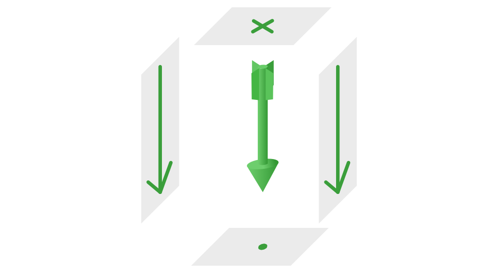
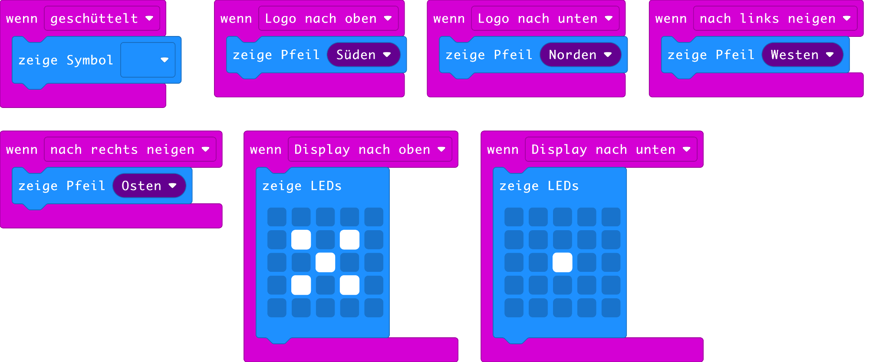

Geschüttelt, nicht gerührt!
Stell dir vor, du hälst eine Schnur, an der ein Stein angebunden ist. Wenn du deine Hand ruhig hälst, zeigt der Stein immer genau nach unten. Der Grund ist die Erdanziehungskraft, auch Gravitation genannt. Sie zieht alles in Richtung Erdmittelpunkt. Lässt du die Schnur los, fällt der Stein nach unten, d.h. er wird sich immer schneller nach unten bewegen bis er auf dem Boden auftrifft. Wenn ein Stein immer schneller wird, so ist er beschleunigt.
Der micro:bit hat einen Sensor, mit welchem man die Beschleunigung messen kann. Er heisst Accelerometer oder Beschleunigungssensor. Hält man den micro:bit still, misst dieser Sensor wo unten ist.
Stell dir die Erdanziehungskraft wie ein Pfeil vor, der immer nach unten zeigt, siehe Abb. 1. Wenn man diesen Pfeil von oben betrachtet, sieht man die Federn des Pfeils, welche wie ein Kreuz bilden. Schaut man von unten auf den Pfeil, sieht man nur die punktförmige Pfeilspitze. Von der Seite, sieht der Pfeil pfeilförmig aus 🙂.

Abb. 1 – Die Schwerkraft als Pfeil, der immer nach unten zeigt
Tippe nun das folgende Programm von Abb. 2 ab. Du findest die Zangenblöcke im Bereich Eingabe. Dieses Programm verwendet den Beschleunigungssensor um die verschiedenen Ansichten des Pfeils anzuzeigen. Drehe den micro:bit in alle Richtungen und überprüfe, ob die Erdanziehungskraft immer nach unten zeigt.

Abb. 2 – Programm zur Darstellung der Erdanziehungskraft
Wenn man den micro:bit schüttelt, schlägt der Beschleunigungssensor aus. In diesem Fall wird ein Schachbrettmuster angezeigt.
Aufgaben
-
Programmiere das Spiel: Schere, Stein, Papier. Durch schütteln soll per Zufall eines der drei Symbole angezeit werden. Spiele das Spiel nachher mit der Nachbargruppe.
-
Programmiere einen Würfel. Wenn der micro:bit geschüttelt wird, soll zufällig eine Seite des Würfels angezeigt werden.
-
Programmiere einen Schrittzähler. Beim Schütteln soll der Schrittzähler hochzählen und die Anzahl der Schritte auf dem Bildschirm angezeigt werden.
-
Auf dem Bildschirm soll ein Punkt erscheinen, der sich wie eine Kugel auf einem Brett verhält. Neigt man den micro:bit auf eine Seite, rollt der Punkt nach unten.
-
Schliesse den Lautsprecher an. Wenn die Lage des micro:bit geändert wird, soll ein Alarmsignal ertönen.
Autor: T. Jenni
Letzte Änderung: 17. Mai 2021

Einsteigerkurs für den BBC micro:bit von T. Jenni, et al. ist lizenziert unter einer Creative Commons Namensnennung - Nicht-kommerziell - Weitergabe unter gleichen Bedingungen 4.0 International Lizenz.